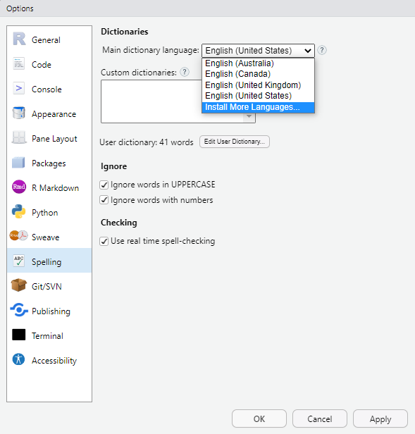

# install packages
install.packages("dplyr")
install.packages("stringr")
install.packages("quanteda")
install.packages("hunspell")
install.packages("flextable")
# install klippy for copy-to-clipboard button in code chunks
install.packages("remotes")
remotes::install_github("rlesur/klippy")Spell checking text data with R

Introduction
This tutorial focuses on spell checking and shows how to perform spell checking in R. This tutorial builds heavily on (the documentation site of the hunspell package)[https://cran.r-project.org/web/packages/hunspell/vignettes/intro.html] (Ooms).

This tutorial is aimed at beginners and intermediate users of R with the aim of showcasing how to perform spell checking of textual data using R. The aim is not to provide a fully-fledged analysis but rather to show and exemplify selected useful aspects of spell checking.
The entire R Notebook for the tutorial can be downloaded here. If you want to render the R Notebook on your machine, i.e. knitting the document to html or a pdf, you need to make sure that you have R and RStudio installed and you also need to download the bibliography file and store it in the same folder where you store the Rmd file.

Click here to open an interactive Jupyter notebook that allows you execute, change, and edit the code as well as upload your own data.
What is spell checking?
Spell checking is the process of checking for and identifying spelling errors in a piece of text. It works by comparing each word in the text against a dictionary of correctly spelled words, and marking any words that are not found in the dictionary as potentially misspelled.
Spell checking is used in a variety of applications, including word processors, email clients, and online text editors, to help users produce error-free written material. The goal of spell checking is to improve the accuracy and readability of written text by catching and correcting spelling errors before they are published or sent.
Spell checking of textual data consists of the following steps:
- First, the text in a document is tokenized, i.e. the text is broken down into individual words.
- Each word is then broken down in it’s root (stemming) and affix(es)
- Next, it i checked if the word (plus affix combination) occurs in a dictionary
- Optionally, for words (or combinations), corrections are suggested based on similar words in the dictionary
Spell checking in R with hunspell
The hunspell package provides access to Hunspell which is a spell checker library used in various software applications such as OpenOffice, Mozilla Firefox, or RStudio. In addition to simple spell checking, the hunspell package also provides additional funtionalities like tokenization or stemming and and its spell checking capabilities encompass almost any language or alphabet. Tokenization and stemming are part of the hunspell package in order to split texts into individual words but also to extract text from several file formats such as basic text, html, pdf, or xml.
The hunspell package checks if words occur in a given dictionary with the (default) dictionary being “en_US”. However each function can be used in another language by setting a custom dictionary in the dict parameter.
Preparation and session set up
This tutorial is based on R. If you have not installed R or are new to it, you will find an introduction to and more information how to use R here. For this tutorials, we need to install certain packages from an R library so that the scripts shown below are executed without errors. Before turning to the code below, please install the packages by running the code below this paragraph. If you have already installed the packages mentioned below, then you can skip ahead and ignore this section. To install the necessary packages, simply run the following code - it may take some time (between 1 and 5 minutes to install all of the packages so you do not need to worry if it takes some time).
Now that we have installed the packages, we activate them as shown below.
# activate packages
library(dplyr)
library(stringr)
library(quanteda)
library(hunspell)
library(flextable)
# activate klippy for copy-to-clipboard button
klippy::klippy()Once you have installed R and RStudio and initiated the session by executing the code shown above, you are good to go.
In the following, we will perform spell checking and explore several useful functions associated with spell checking in the hunspell package.
Checking individual words
We start by checking a vector of individual words.
words <- c("analyze", "langauge", "data")
correct <- hunspell_check(words)
print(correct)[1] TRUE FALSE TRUEThe output shows that the second word was not found in the dictionary, i.e., it is identified as being incorrect. Next, we can ask for suggestions, i.e. the correct form of the word.
[[1]]
[1] "language" "melange" In this case, there are two words that are deemed as potential alternatives.
Checking documents
Since we rarely want to check individual words, we will now focus on spell checking full texts rather than individual vectors with words.
First, we load a text (in this case an explanation of what grammer is that is taken from Wikipedia).
# read in text
exampletext <- base::readRDS("tutorials/spellcheck/data/tx1.rda", "rb")
# inspect
exampletext[1] "Grammar is a system of rules which governs the production and use of utterances in a given language. These rules apply to sound as well as meaning, and include componential subsets of rules, such as those pertaining to phonology (the organisation of phonetic sound systems), morphology (the formation and composition of words), and syntax (the formation and composition of phrases and sentences). Many modern theories that deal with the principles of grammar are based on Noam Chomsky's framework of generative linguistics."We now use the hunspell function to find incorrect words (or, more precisely, words that are not in the default dictionary). The output shows that organisation is considered an error as it follows British spelling conventions (more about this in the section on setting a language).
errors <- hunspell(exampletext)
errors[[1]][1] "componential" "organisation" "Noam" We check what suggestions we get for these words.
hunspell_suggest(errors[[1]])[[1]]
[1] "component" "exponential" "continental"
[[2]]
[1] "organization" "organist" "sanitation"
[[3]]
[1] "Nam" "Roam" "Loam" "Noah" "Foam" "No am" "No-am" "Moan" "Norm" In our case, the words are not errors but simply terms that do not occur in the dictionary, either because they are specialist terminology (componential), they follow British spelling conventions (organisation), or they represent an uncommon proper name (Noam). Thus, so we will not replace them.
Stemming Words
The hunspell_stem looks up words from the dictionary which match the root of the given word (sometimes multiple items are returned if there are multiple matches in the dictionary).
toks <- c("love", "loving", "lovingly", "loved", "lover", "lovely")
hunspell_stem(toks)[[1]]
[1] "love"
[[2]]
[1] "loving" "love"
[[3]]
[1] "loving"
[[4]]
[1] "loved" "love"
[[5]]
[1] "lover" "love"
[[6]]
[1] "lovely" "love" The hunspell_stem function can be very useful when trying to find the stems of words in a corpusto see, e.g., how many word types a text contains.
Working with texts
It is quite common that we work with texts rather than individual word vectors. As such, in the following, we will go through a workflow that resembles what one might use spell checking for in their research.
texttable <- quanteda::tokens("Noam said he loves to analyze langauge and collors.") %>%
unlist() %>%
as.data.frame() %>%
dplyr::rename(words = 1) %>%
dplyr::mutate(
id = 1:nrow(.),
error = hunspell::hunspell_check(words)
) %>%
dplyr::relocate(id)id | words | error |
|---|---|---|
1 | Noam | FALSE |
2 | said | TRUE |
3 | he | TRUE |
4 | loves | TRUE |
5 | to | TRUE |
6 | analyze | TRUE |
7 | langauge | FALSE |
8 | and | TRUE |
9 | collors | FALSE |
10 | . | TRUE |
The output shows the original word and if it was identified as an errors (i.e., it did not occur in the dictionary). Next, we extract suggestions for the words that were identified as errors.
texttable2 <- texttable %>%
# add suggestions
dplyr::mutate(
suggestions = ifelse(error == F,
paste0(hunspell_suggest(words), ", "),
""
),
# clean suggestions
suggestions = stringr::str_remove_all(suggestions, fixed("c(")),
suggestions = stringr::str_remove_all(suggestions, fixed(")")),
suggestions = stringr::str_remove_all(suggestions, ", {0,1}$")
)id | words | error | suggestions |
|---|---|---|---|
1 | Noam | FALSE | "Nam", "Roam", "Loam", "Noah", "Foam", "No am", "No-am", "Moan", "Norm" |
2 | said | TRUE | |
3 | he | TRUE | |
4 | loves | TRUE | |
5 | to | TRUE | |
6 | analyze | TRUE | |
7 | langauge | FALSE | "language", "melange" |
8 | and | TRUE | |
9 | collors | FALSE | "colors", "collars", "collators", "color's", "color" |
10 | . | TRUE |
We now want to replace the errors with the correct words but aso retain words that are erroneously regraded as errors.
texttable3 <- texttable2 %>%
# replace errors with the first suggestion
dplyr::mutate(corrected = dplyr::case_when(
error == T ~ words,
error == F ~ stringr::str_remove_all(suggestions, '\\", .*'),
T ~ words
)) %>%
# clean the corrected words
dplyr::mutate(corrected = stringr::str_remove_all(corrected, '^\\"')) %>%
# insert words where we do not want the suggestions but the original word
dplyr::mutate(corrected = dplyr::case_when(
words == "Noam" ~ words,
T ~ corrected
))id | words | error | suggestions | corrected |
|---|---|---|---|---|
1 | Noam | FALSE | "Nam", "Roam", "Loam", "Noah", "Foam", "No am", "No-am", "Moan", "Norm" | Noam |
2 | said | TRUE | said | |
3 | he | TRUE | he | |
4 | loves | TRUE | loves | |
5 | to | TRUE | to | |
6 | analyze | TRUE | analyze | |
7 | langauge | FALSE | "language", "melange" | language |
8 | and | TRUE | and | |
9 | collors | FALSE | "colors", "collars", "collators", "color's", "color" | colors |
10 | . | TRUE | . |
We can now check how many errors there are in our text.
texttable4 <- texttable3 %>%
dplyr::summarise(
tokens = nrow(.),
types = length(names(table(tolower(words)))),
errors_n = sum(ifelse(corrected == words, 0, 1)),
errors_percent = errors_n / tokens * 100
)tokens | types | errors_n | errors_percent |
|---|---|---|---|
10 | 10 | 2 | 20 |
Finally, we can put the corrected text back together.
correctedtext <- paste0(texttable3$corrected, collapse = " ") %>%
stringr::str_replace_all(" \\.", ".")
correctedtext[1] "Noam said he loves to analyze language and colors."Setting a Language
By default, the hunspell package includes dictionaries for en_US and en_GB which means that you can easily switch from US American to British English spelling. As a default, hunspell uses the en_US dictionary but we can easily switch to British English instead as shown below.
First, we use the default en_US dictionary which returns LADAL as well as the British spellings of analyse and colours as errors.
hunspell("At LADAL we like to analyse language and colours.")[[1]]
[1] "LADAL" "analyse" "colours"If we switch to the en_GB dictionary, only LADAL is identified as not occuring in the dictionary.
hunspell("At LADAL we like to analyse language and colours.", dict = "en_GB")[[1]]
[1] "LADAL"
If you want to use another language you need to make sure that the dictionary is available in your system so that RStudio can access the dictionary. You can install dictionaries very easily in RStudio. Simply go to Tools > Global options > Spelling and then under Main dictionary language select Install More Languages from the drop-down menu. Once the additional languages are installed, their dictionaries are available to the hunspell package in RStudio.
However, you may want to install dictionaries directly, e.g., into your working directory so that you can use the dictionary when working with text data either on your computer or in a cloud environment. In this case, you can go to the wooorm dictionary GitHub repository, which has dict and aff files (i.e., the files that are needed to create a dictionary) for many different languages, and install the dict and aff files manually. In our case, I downloaded the dict and aff files from the German dictionary, stored them together with the other dictionary files in the hunspell package library, and renamed the files as de.dict and de.aff.
If you then want to use the dictionary, you simply specify the dict argument as shown below for a German sentence.
hunspell("Im LADAL analysieren wir Sprachen und Farben.", dict = "de")This is the end of this short tutorial on spell checking with R. If you want to go deeper, please check out the documentation site of the hunspell package)[https://cran.r-project.org/web/packages/hunspell/vignettes/intro.html] (Ooms).
Citation & Session Info
Schweinberger, Martin. (2023)` Spell checking text data with R. Brisbane: The University of Queensland. url: https://ladal.edu.au/tutorials/spellcheck.html (Version 2023.02.08).
@manual{schweinberger2023spellcheck,
author = {Schweinberger, Martin},
title = {Spell checking text data with R},
note = {tutorials/spellcheck/spellcheck.html},
year = {2022},
organization = {The University of Queensland, School of Languages and Cultures},
address = {Brisbane},
edition = {2023.02.08}
}sessionInfo()R version 4.4.2 (2024-10-31)
Platform: x86_64-pc-linux-gnu
Running under: Ubuntu 24.04.1 LTS
Matrix products: default
BLAS: /usr/lib/x86_64-linux-gnu/blas/libblas.so.3.12.0
LAPACK: /usr/lib/x86_64-linux-gnu/lapack/liblapack.so.3.12.0
locale:
[1] LC_CTYPE=en_US.UTF-8 LC_NUMERIC=C
[3] LC_TIME=en_US.UTF-8 LC_COLLATE=en_US.UTF-8
[5] LC_MONETARY=en_US.UTF-8 LC_MESSAGES=en_US.UTF-8
[7] LC_PAPER=en_US.UTF-8 LC_NAME=C
[9] LC_ADDRESS=C LC_TELEPHONE=C
[11] LC_MEASUREMENT=en_US.UTF-8 LC_IDENTIFICATION=C
time zone: Australia/Brisbane
tzcode source: system (glibc)
attached base packages:
[1] stats graphics grDevices datasets utils methods base
other attached packages:
[1] flextable_0.9.7 hunspell_3.0.5 quanteda_4.1.0 stringr_1.5.1
[5] dplyr_1.1.4
loaded via a namespace (and not attached):
[1] Matrix_1.7-2 jsonlite_1.8.9 compiler_4.4.2
[4] renv_1.0.11 stopwords_2.3 zip_2.3.1
[7] tidyselect_1.2.1 Rcpp_1.0.13-1 xml2_1.3.6
[10] assertthat_0.2.1 fontquiver_0.2.1 textshaping_0.4.1
[13] systemfonts_1.1.0 uuid_1.2-1 yaml_2.3.10
[16] fastmap_1.2.0 lattice_0.22-6 R6_2.5.1
[19] gdtools_0.4.1 generics_0.1.3 knitr_1.49
[22] htmlwidgets_1.6.4 tibble_3.2.1 openssl_2.3.0
[25] pillar_1.10.1 rlang_1.1.5 fastmatch_1.1-4
[28] stringi_1.8.4 xfun_0.49 cli_3.6.3
[31] withr_3.0.2 magrittr_2.0.3 digest_0.6.37
[34] grid_4.4.2 askpass_1.2.1 lifecycle_1.0.4
[37] vctrs_0.6.5 evaluate_1.0.3 glue_1.8.0
[40] data.table_1.16.4 officer_0.6.7 fontLiberation_0.1.0
[43] ragg_1.3.3 codetools_0.2-20 klippy_0.0.0.9500
[46] fontBitstreamVera_0.1.1 rmarkdown_2.29 tools_4.4.2
[49] pkgconfig_2.0.3 htmltools_0.5.8.1 References
Ooms, Jeroen. “Hunspell: High-Performance Stemmer, Tokenizer, and Spell Checker.” https://cran.r-project.org/web/packages/hunspell/index.html.